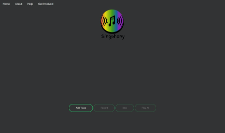
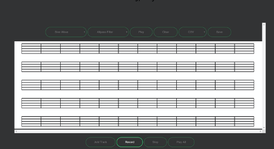
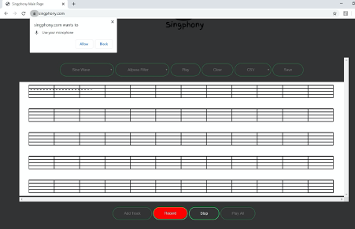
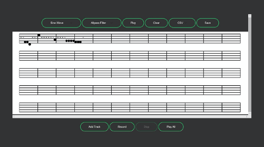
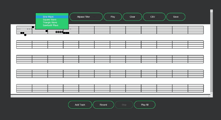
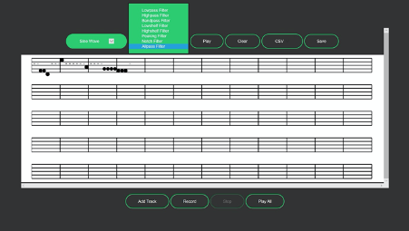
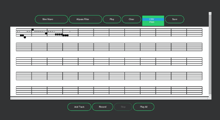
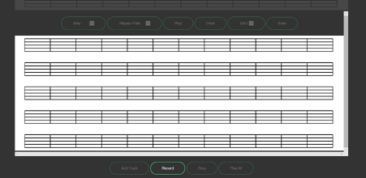

Welcome to Singphony. To get you started, follow the steps outlined below.
1. Add track. To add a track to record your music, click on the ‘Add Track’ button below the Singphony logo, on the home page.
A track allowing for a melody of up to 4 minutes long will appear on the screen.
2. Record track. To begin recording your melody click on the ‘Record’ button. The site will request permission to use your microphone. Click ‘Allow’ to proceed.
Singphony will then record your melody until you click the ‘Stop’ button. You may resume recording by pressing the ‘Record’ button again and it will pick up from where you left off, provided your melody is under 4 minutes long.
3. Playing back your melody. When the melody is complete and recording has stopped you have the option to play back your melody. To do this, press the ‘Play’ button located above the stave.
This will play the melody from the beginning. You also have the option to delete the melody and start fresh by selecting ‘Clear’.
The sound of your melody can be modified by selecting different waves or filters for playback.
 4. Saving the melody. Your creation can be saved in two different formats, a csv file and a png file. To save your track as a certain file type, confirm said type in the file type space above the track, before clicking ‘Save’.
5. Adding more tracks to your creation. You may add up to four tracks, each with a maximum length of four minutes. To do so, click ‘Add Track’ as before. A blank stave will appear below the track you were previously working on.
Once you have a blank track in front of you, you can record another melody, stop it, play it back etc. just as you did before.
The current stave will be displayed brightly, while any tracks not in use will be greyed out. To return to working on a previous track, just click on said stave and continue your musical creation.
When working with multiple tracks, it is possible to play each track separately by selecting ‘Play’ as before. This will play the melody from the current track.
Selecting ‘Play All’ will playback the melody from all tracks over each other, to create a more full melody and hear all your instruments/melody lines against each other.